| Raytracer
This is the fourth time I have worked on
a raytracer.
The first time I did very little. That
code was scrapped.
The second
time I tried to make it better. That code was reused.
The third
time I made it Distributed (it spreads many rays out for higher quality).
The fourth time is now.
Changes Made:
-Fixed bugs
-Found bugs that I tried to fix but failed
(lots of these, actually)
-Added environment maps
-Made adaptive
-Thrashed the code to the point that I
don't want to touch it again. (I was in a great rush)
Fourth Time, First changes:
Added a texture mapped environment.
bloopers Directory
cubemaptest01.txt
Spent a long time making the first 'real'
scene.
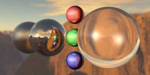
cubemaptest04.txt
(300 oversamples. about 1.25 hours to render on one SGI R10000 and
my NT workstation)
Thought I'd let it do something else too... so I changed this just a
little and got this:
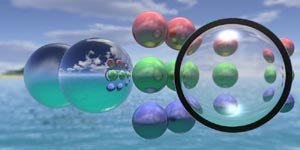
cubemaptest05.txt
(800 oversamples. Millions of square root domain errors. 3 hours on
one SGI R10000 and my NT workstation)
Ok, so I have the lighting model and sphere & polygon intersection
from last time. I added the environment map which was a simplified plane
intersection. I don't know why I spent 12 hours doing just this...
The environment map is simply a cube surrounding the scene. If at any
point a ray we are tracing doesn't hit anything, then we just ram it into
the environment map cube and see what to draw. The environment map isn't
really in the scene of course, we just imagine that it is there once a
ray misses everything. Mapping into the cube isn't so hard when we first
think about it. it's just
texture-u = ray-direction-vector.u / ray-direction-vector.w
texture-v = ray-direction-vector.v / ray-direction-vector.w
(where w is the largest member of ray-direction-vector, and u and v
are properly choosen so that they align with the x and y of the texture
maps.) There is some additional worrying to be done to handle floating
point inprecision.
I also implemented linear filtering on the texturemaps to make them
look better.
---
Adaptive Oversampling
Previously I was sampling every pixel a constant number of times, and
then averaging them all together. This is inefficient (relative to number
of pixel samples rendered) when a scene contains large areas of relatively
non-distributed area.
My Method:
Store the averaged color for every pixel along with the sum of the weights
that went to contributing that pixel. (When taking a pixel sample, you
can associate a weight of how much it contributes to the scene according
to which random values were chosen for the various distributions. I did
not implement this, however, and just weighted each pixel samples with
a 1.) When adding a new sample, the new average is = old_average * (avg_weight
/ new_weight) + new_sample * (sample_weight / new_weight) where new_weight
= avg_weight + sample_weight.
Store an error metric. This is difficult, as to get a proper error I
believe I would need to be able to read all previous samples. I can’t,
because I am averaging them together. So I simply take a weighted average
the new error with the average error, in exactly the same way that I find
the new average color.
Render the entire image N times to establish base error statistics.
I can not adaptively improve a pixel unless I know that it is in error.
The only way to know that is to sample it many times and see how distributed
the colors are for it.
Adaptively render pixels which have the highest average error per sample.
Figures: (from souce file 238ad02.txt
)
| 1 |
|
This column shows the difference between the current image and
the previous.
|
This column shows in red the pixels which were sampled to make
this new image from the last.
(Final row is explained below)
|
| 2 |
|
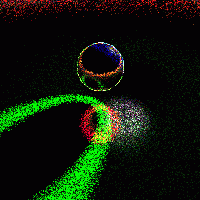 |
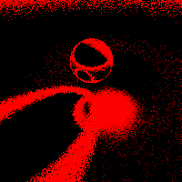 |
| 3 |
|
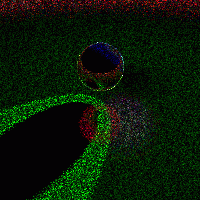 |
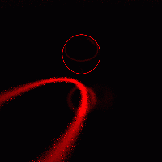 |
| 4 |
|
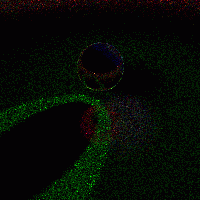 |
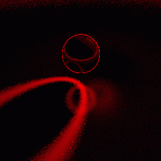 |
| 5 |
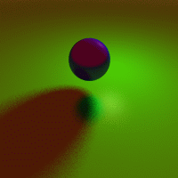 |
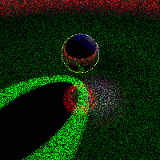 |
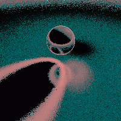 |
-
The scene rendered with 10 oversamples for every pixel.
-
The equivalent of 10 oversamples for the entire image are rendered adaptively.
(That’s 400000 samples for this 200x200 pixel image.) This uses the error
values determined in the previous image (they are refined as we continue
to render this image as well.)
Look at the second column. This shows the difference between the first
image and the second. It clearly shows which pixels were resampled, as
well as the relative amount of error fixed by doing so.
Look at the third coulmn. This shows the number of additional samples
taken for each pixel.
-
Notice that some pixels in the last image (2) seem to stick out. We did
not oversample all pixels that needed it. In the soft shadow you can see
bright green specks, standing out from the smoother shading which we just
accomplished. This is because we did not find enough error for those pixels
during the initial 10 oversamples. Our adaptive method will not fix this
for a long time (remember that the error metric is error / samples -- so
once we oversampled the other pixels enough we would eventually get to
these.)
To fix this, another 10 oversamples are taken for every pixel, and then
another 400000 adaptive pixels samples (equivalent to 10 oversamples are
taken for every pixel) are found.
Look at the third column. Notice that the pixels which we had missed
last time were sampled again many times. They are the bright red dots --
showing that they had many aditional samples taken.
-
Now another 400000 adaptive samples are taken. This greatly improves the
areas that need it. The second column shows diminishing returns for our
efforts (even in the areas that need it). The difference between the two
images is slim. The third column shows that there were a few more pixels
that needed many more samples (there are few bright red specks) but not
as many as last time.
-
This final image is what my raytracer produced previously. It has used
the same total number of pixel samples -- (50 per pixel, or 20,00,000 total
pixels sampled). The second column shows the difference between this and
the adaptive image from (4). The difficult areas of soft shadow, glossy
reflection, and edges of objects are what have been improved.
The third column shows in red the total number of samples taken per
pixel. You can see that large numbers of samples are needed for the soft
shadow and the antialiasing of object edges. The blue in the image shows
the error per samples. This is what is used when determining which pixels
to render more samples for. The bright cyan specks are the pixels with
highest priority to be rendered again. Notice that the whole image is essentially
covered with cyan (although parts very dark). This shows that all pixels
have the possibility of being resampled, once the highest priority pixels
are sampled enough.
Another example
|
Nestled deep in the forest is a collection of objects. They sit there
and get raytraced all the time. This image shows a non-adaptive rendering
of the scene with 60 oversamples per pixel.
Shown here is a portion of the image magnified by 2 for you to see the
details. Click on it to see the entire image. |
|
30 image oversamples then 12,800,000 adaptive pixel samples (equivalent
of 20 image oversamples). This image took 5/6th as many samples as
the previous one.
The shadow just left of the purple sphere is no longer grainy. The reflection
in the bottom left sphere is also better. Click and compare the full images. |
| 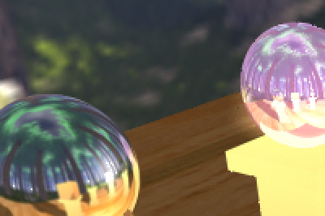 |
This is also an adaptive image, however this time 38,400,000 adaptive
samples were taken (equiv. of 60 image oversamples). A minimum of 2 samples
for each pixel were used of course, as that many is needed before the error
for a pixel is defined. However, some pixels which should have been oversampled
more times were not. They appear as specks. (easily visible in full image).
These occurred due to the first two samples for a pixel returning an error
too low – a statistical pitfall. The moral: Adaptively sample an image
after first gathering a good amount of error data (IE, overample the entire
image multiple times first.) |
| 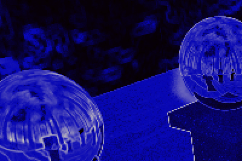 |
This is the internal data used for the adaptive rendering. The red
channel is the number of samples taken. The blue channel is the average
error. The green channel is the average error divided by the number of
samples taken. All channels are output scaled such that the maximum datapoint
for that channel apears with maximum intensity. |
| 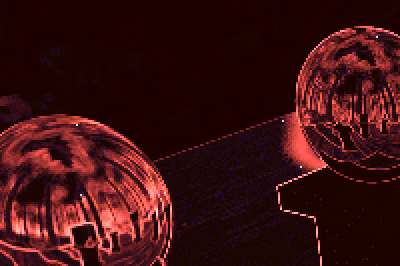 |
I have scaled the colors to make certain aspects clearer. The red shows
where the most samples have been taken. The bright blue dots show the highest
values on the blue channel – these are the pixels that would be rendered
next if more adaptive samples were taken. |
| 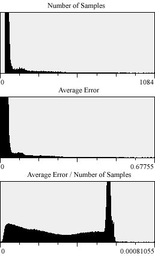 |
Histograms of the three channels. Notice that there were no pixels
with less than 30 samples. (this data is from the second image from above).
Also, notice that there are only small portions of the image with high
error. This is why adaptive sampling helps us – we want to focus our efforts
on those areas and not the bulk of the low error pixels. In fact, you can
see that some pixels received up to 1084 oversamples! This is a drastic
change from the limit of 60 oversamples in the unadaptive method. |
Adaptive Wrapup
Wow. The adaptive method I implemented really improved things. Previously
I would take hundrededs of oversamples for every pixel in an image. To
do so I would save all the images to disk (so that many computers could
work on it at once.) This adaptive method requires much less rendering.
A couple dozen samples for each pixel establish the required error information.
Then only a handful of adaptive rays need to be used to refine the portions
of the image which require it. (a handful when compared to how many pixel
samples are used to render an entire image). All of this is done in constant
memory, so I don’t need lots of hard drive space. The data is saved to
disk whenever you want – you can interrupt the raytracer at any time to
check on how it’s doing, and resume later.
Rendering time is faster due to the fact that I’m rendering drastically
fewer rays for acceptable images. However, render time for one adaptive
ray is longer than one non-adaptive ray: errors must be computed and pixels
with highest error/sample ratio must be searched for.
I can no longer have multiple machines working on rendering the same
image. It was always so cool to have a PC, an SGI, and a SUN all working
on the same image for me.
Also, I thrashed my code to put this in. It requires much cleanup (which
I have no intention of doing.)
Code Directory
|
{kind=link}
{kind=link}
{kind=link}
.jpg){kind=link}
.jpg){kind=link}
.jpg){kind=link}
raydebug.jpg){kind=link}
raydebugB.jpg){kind=link}